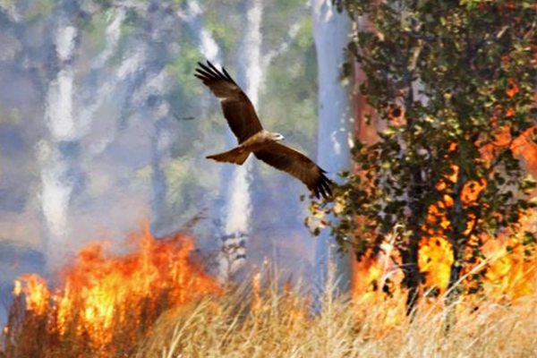

Tres especies de aves rapaces, aves rapaces con picos y garras afiladas y vista aguda, son ampliamente conocidas no solo por acechar en los márgenes de los incendios, sino también por...mas
Tres especies de aves rapaces, aves rapaces con picos y garras afiladas y vista aguda, son ampliamente conocidas no solo por acechar en los márgenes de los incendios, sino también por...mas
Guacamayo azul que inspiró la película "Río" es declarado... mas
Una gorila ha cautivado a la comunidad científica por su capacidad para... mas

Puerto Rico: Loros criados en cautiverio desarrollaron nuevos... mas
Ahora quedó corroborado que cinco siglos antes de que llarega Colón, ya existía un asentamiento en Canadá, hecho por ... mas
Carta a una señorita en Paris
Julio Cortázar
Andrée, yo no quería venirme a vivir a su departamento de la calle Suipacha. No tanto por los conejitos, más bien porque me duele ingresar en un orden cerrado, construido ya hasta en las más finas mallas del aire, esas que en su casa preservan la música de la lavanda, el aletear de un cisne con polvos, el juego del violín y la...
Cefalea
Julio Cortázar
Cuidamos las mancuspias hasta bastante tarde, ahora con el calor del verano se llenan de caprichos y versatilidades, las más atrasadas reclaman alimentación especial y les llevamos avena malteada en grandes fuentes de loza; las mayores están mudando el pelaje del lomo, de manera que es preciso ponerlas aparte...
Bestiario
Julio Cortázar
(...) — A mí, créeme que no me gusta que vaya — dijo Inés.— No tanto por el tigre, después de todo cuidan bien ese aspecto. Pero la casa tan triste, y ese chico sólo para jugar con ella...
— A mí tampoco me gusta — dijo la madre, e Isabel supo como desde un tobogán
que la mandarían a lo de Funes a pasar el verano...